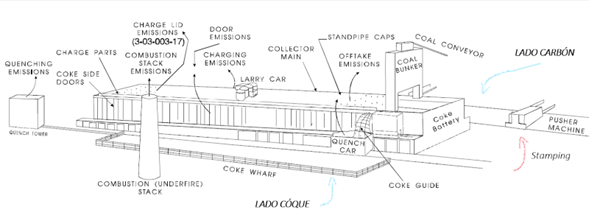

El objetivo es realizar una simulación de una planta de Hornos de coquización, con tal de conocer los parámetros de operación, tiempos de trabajo de las máquinas y equipos, y brindarle a la gerencia una visión más precisa de la operación y rendimiento de la planta. Con esta información, se propone una optimización del proceso, en la que se demuestra que vale la pena invertir en 2 máquinas para aumentar la rentabilidad, la productividad, reducir tiempos muertos, valiéndose de la misma cantidad de operarios.
Etapas del proceso en la planta
1. Alimentación de la planta y acopio de Carbón molido
En primera medida, por medio de camiones, llega a la planta la cantidad de Carbón programada para llenar los hornos. El Carbón que llega proviene de la Planta Lavadora y posee un tamaño de grano y una mezcla específica de varios tipos de carbones, según la calidad y propiedades del Coque que desee el cliente de ese lote.
El camión deja la carga en el suelo y un cargador se encarga de alimentar la tolva de almacenamiento. En promedio, llegan 420 Ton de carbón cada día.
2. Transporte y segundo punto de almacenamiento de Carbón molido
Desde la tolva de almacenamiento se dosifica la carga, y se transporta hasta la 2.ª tolva de almacenamiento por medio de bandas transportadoras. Esta tolva de almacenamiento sirve para alimentar la "Llenadora", máquina con la que se llenan los hornos por la parte superior.
3. Llenado de hornos
Con el horno vacío, las puertas cerradas y la Llenadora completamente cargada, los operarios abren las tapas superiores del horno y las compuertas de los chutes de la Llenadora para que salga el carbón.
4. Coquización
Una vez llenado el horno, los operarios ponen las tapas y el proceso de coquización inicia, que tarda alrededor de 48 horas. En este intervalo de tiempo, el operario de los hornos se encarga de monitorear la temperatura de las soleras y cúpulas de los hornos desde un cuarto de control y un software SCADA, y según esto se controla la apertura de los Dampers del sistema de ventilación, con tal de mantener el proceso de combustión en condiciones óptimas.
5. Deshorne
Cuando el horno está listo (ya se quemó toda la materia volátil y se perdió la llama), se desplaza la Deshornadora o Pusher al frente del horno en cuestión, se levantan las puertas del horno y se introduce el brazo para vaciar el horno.
Al otro lado del horno (Lado Coque), se debe ubicar el Carro de apagado, compuesto por una locomotora y 3 vagones o carros, en los que se depositará el coque caliente. El deshorne se hace en tres tandas debido a que son 3 vagones.
6. Apagado
Luego de que se han llenado los 3 vagones, se desplaza el carro de apagado hasta la torre de apagado, para humectar y enfriar el coque por medio de agua. Los gases y vapor del proceso de apagado son succionados por la torre, y una gran parte de estos son condensados gracias a la aspersión de nebulizadores de agua, por lo que se recupera una parte del agua utilizada en el proceso y se reduce la contaminación.
7. Descarga
Luego del apagado, el carro de apagado se desplaza hasta unas rampas, se abren sus compuertas y se deja caer el coque, para que inicie el proceso de clasificación y cargue, que es la etapa final del proceso.